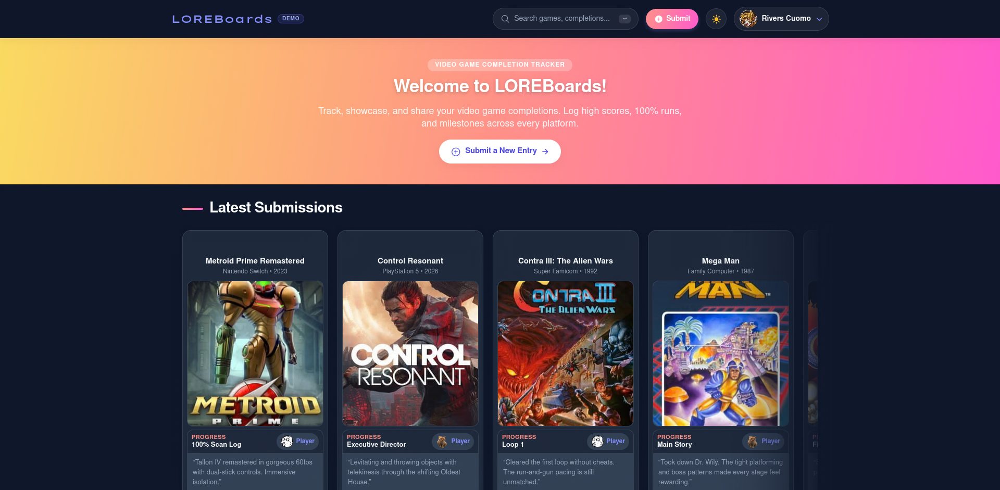
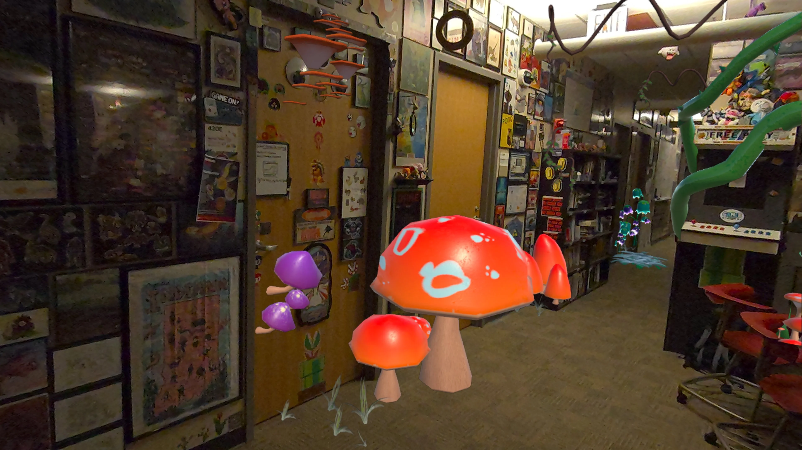
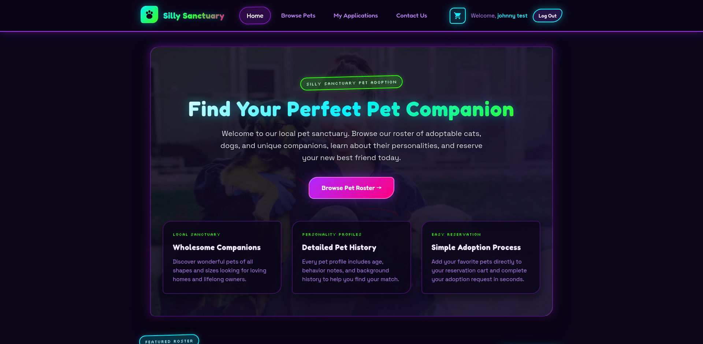
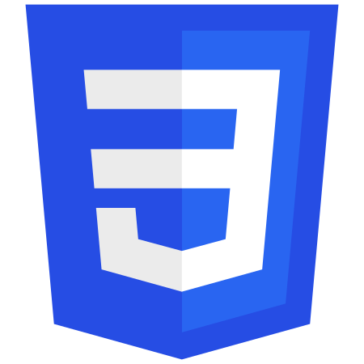
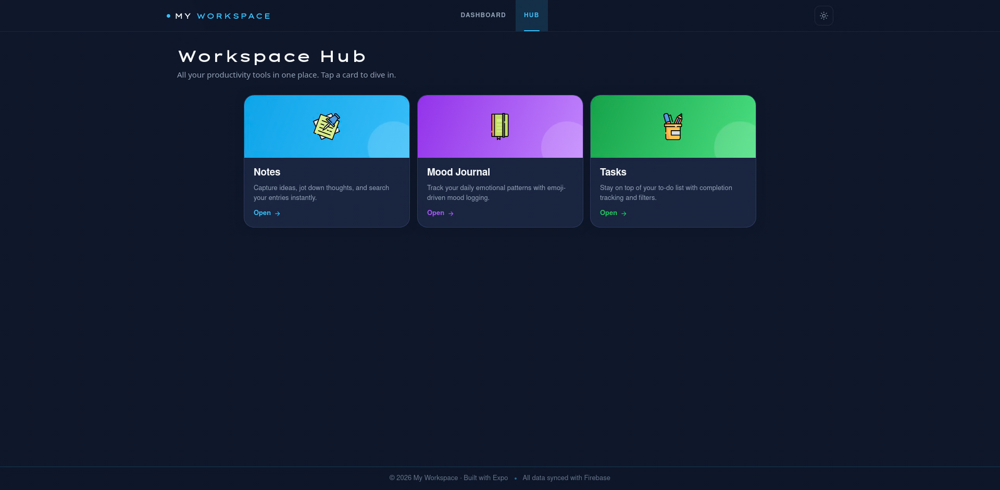
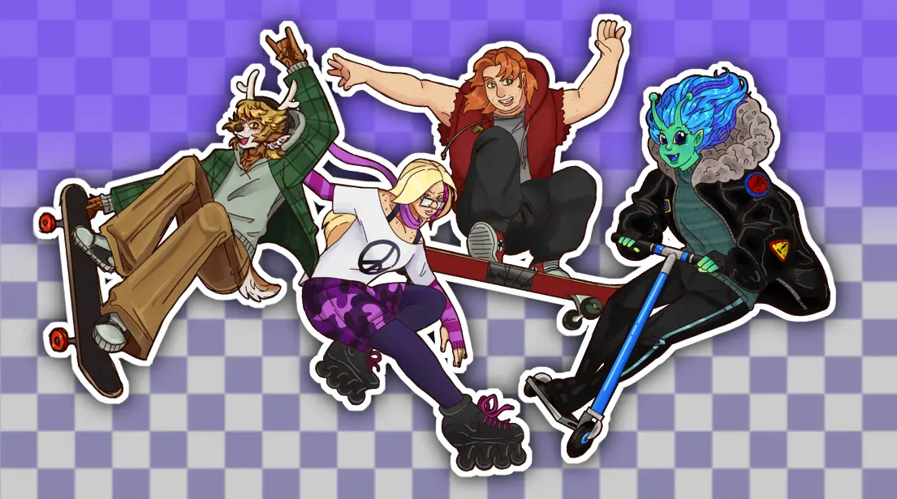
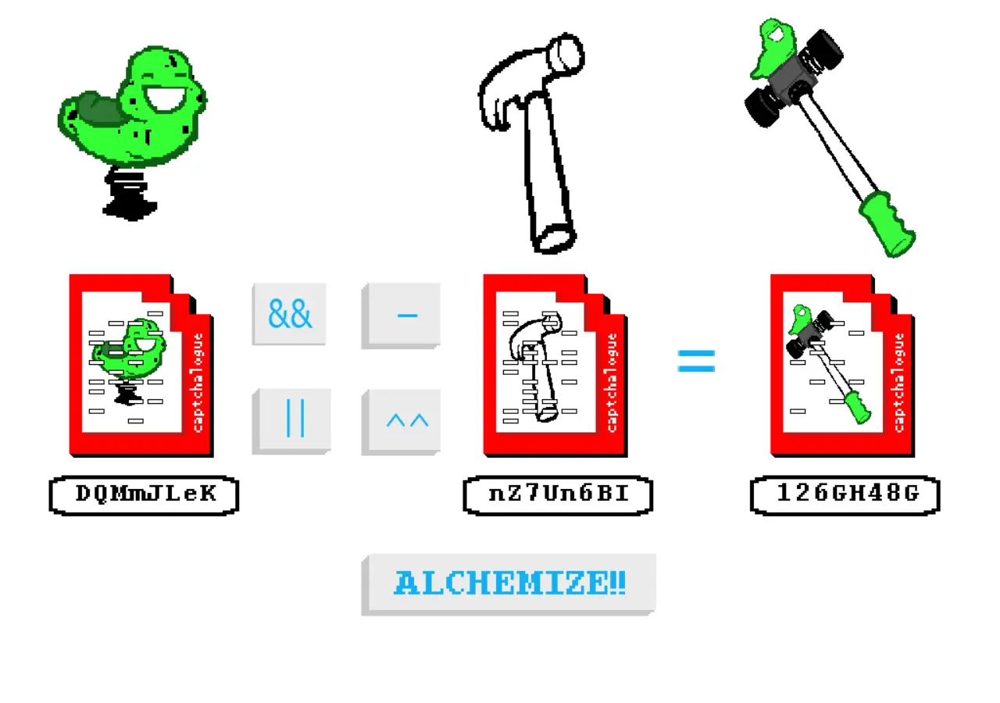

Projects Showcase
LOREBoards

Game completion and leaderboard tracker where players log finished games, high scores, and personal notes. Features IGDB game search integration, Firebase authentication, real-time Firestore database for full CRUD operations, and a responsive web and mobile experience.
Software Used:
LUDDYVerse

Museum Demo
Private Repo
Worked diligently within a tight schedule on a demo for an XR digital museum experience for our school’s museum. Learned quickly and adapted often to conquer the many hurdles placed in our way, keeping up to date with our client’s expectations.
Software Used:
Silly Sanctuary

Pet adoption web application featuring a catalog of adoptable companions, search and filter options by breed and traits, detailed pet personality profiles, user registration, and interactive pet reservation requests.
Software Used:

MyWorkspace

Personal productivity workspace application featuring interactive notes management, task tracking, and mood journaling. Built with a responsive layout providing a seamless experience across desktop and mobile devices.
Software Used:
travellin' sweet

Live Demo
Private Repo
Managed a team of 8 recent graduates of varying disciplines to create an enjoyable, unified adventure game as a Senior Capstone project. Built with careful attention to intentional design for maximum player enjoyment and retention.
Software Used:

Alchemy Calculator

A recreation of an "alchemy crafting" system that uses bitwise math on the item's unique code. This code is represented as a punched card, which can be combined with other cards through various operations. The original had ‘and’ and ‘or’, but I also added ‘xor’ and ‘abjunction’.
Software Used:
Jester Jabs
A jester-themed party game consisting of a variety of joke-based minigames where you attempt to best the other players through fun challenges. Plenty of opportunities for mad-lib style joke creation! The game provides a familiar, yet distinct experience to popular games like Quiplash.
Software Used:
Snatching Sorcerers
Two player infinite arcade-style action game where one player controls the top character with the mouse and the other player controls the bottom player using the arrow keys. The top player catches the falling elements and if they fail the elements become enemies for the bottom player.
Software Used:
About Me
IU Indy Graduate
Indiana, USA
Web Dev & Game Design
Bridging the gap between creative game design
and modern web development.
Heya, I'm Haven! I have a strong passion for video game history and the stories behind digital media. I am a graduate of Game Design and Web Development from IU Indy, and I love creating interactive experiences through personal projects, collaborative games, and web apps.
I have been making eccentric personal websites since I first cracked open an index.html through the terminal on my webserver in high school. I love spinning up server-based projects and using Linux to create IoT devices.
I often use Godot to spin up simple, fun game projects, but am also comfortable in both Unreal and Unity, and have experience in Meta's XR toolkit. My dream is to create meaningful experiences with interesting stories using modern technology.
Technical Skills & Expertise
Game Development
Godot
Unity
Unreal Engine
Meta XR SDK
Aseprite
MC Datapacks
Frontend
React
React Native
JavaScript
TypeScript
Sass (SCSS)
Tailwind CSS
Backend
Node.js
API Integration
SQL (PostgreSQL, MySQL, SQLite)
Excel Functions
Linux
Git